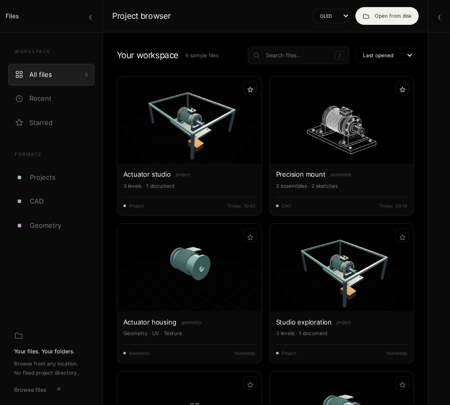
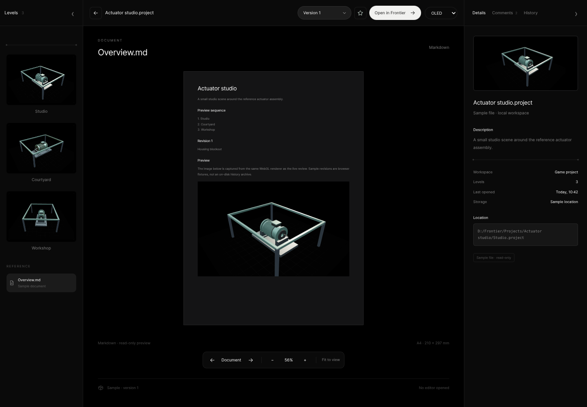
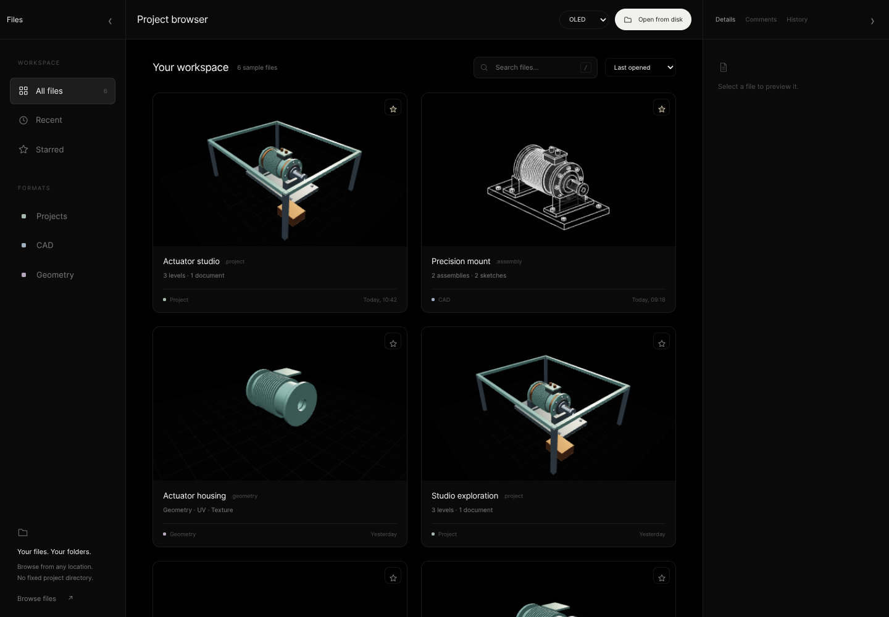
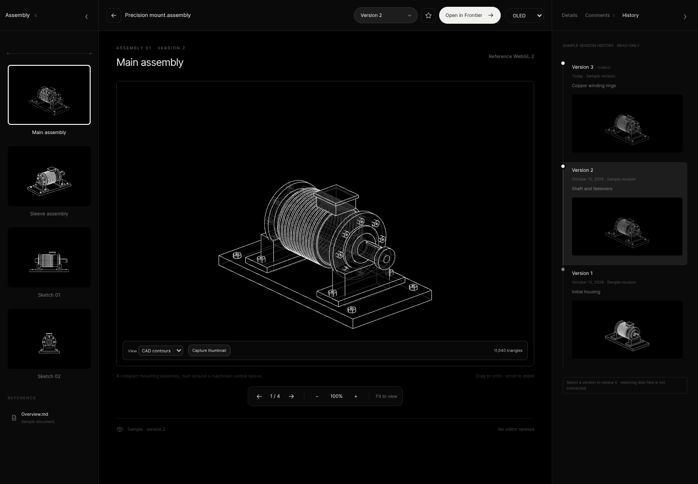

Conversion evidence
Native C++ validation results and HTML design-reference captures. These are different execution paths.
Native C++ checks
Real project creation, file validation and ImGui draw/layout commands executed on the editing host.
| Executed check | Result |
|---|---|
| Loading recorded evidence… | — |
Native report · JSON · C++ validation source
Source fingerprints recorded with the checks
Loading…
HTML reference — visual evidence
Actual Chromium captures of the browser prototype. Select an image to open it at full size.


Visible file catalogue
HTML reference only. Six rendering fixtures are not native presets.

Complete A4 document
HTML reference only. Native Markdown rendering remains pending.

Aligned panel layout
HTML reference capture. Native column/header geometry is checked separately above.

Reference renderer and versions
HTML reference only. Native renderer/history integration remains pending.Texture Studio — Material Library
The first native library increment executes catalogue/source operations and ImGui controls. The image below is CPU rasterization of actual native ImGui draw commands, not a Windows window screenshot.

Renderer validation
Renderer evidence is separate from the application Project Browser. The dedicated review shows native Vulkan readbacks, authored-material edits and recorded results; it does not claim native editor presentation.
Live renderer evidence review (requires the renderer evidence server) · Recorded renderer checks
Remaining native work
Pending- Windows build and runtime verification, including native dialogs and editor transition.
- Actual Vulkan/Slang scene rendering and captured thumbnails.
- A4 Markdown viewer, inspector tabs and real version history.
- Full visual parity, native folder dialogs and return-to-browser navigation.